Práctica 2.2 – Autenticación en Nginx
Jaime Grueso Martin
Indice
- Requisitos Indispensables Previos Al Comienzo de la Práctica
- Introducción
- Paquetes Necesarios
- Creación de Usuarios y Contraseñas para el Acceso Web
- Configurando el Servidor Nginx para Usar Autenticación Básica
- Probando la Nueva Configuración
- Tareas
- Cuestiones Finales
Requisitos Indispensables Previos Al Comienzo de la Práctica
Es importante que la práctica anterior esté funcionando correctamente y se hayan hecho las comprobaciones necesarias.
Introducción
En una transacción HTTP, la autenticación básica es un método que permite a un navegador web u otro cliente enviar credenciales, como nombre de usuario y contraseña, cuando solicita una página al servidor. Esta forma de autenticación es la más simple para aplicaciones web. No destaca por su seguridad o sofisticación. No requiere el uso de cookies, identificadores de sesión ni páginas de inicio de sesión.
Paquetes Necesarios
Se utilizará la herramienta Openssl para crear las contraseñas. Se instalará en caso de no tenerlo instalado. 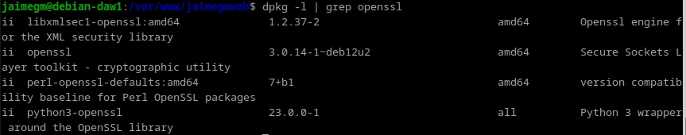
Creación de Usuarios y Contraseñas para el Acceso Web
Se creará un usuario con el nombre del usuario y otro con el apellido del mismo. Para ello se creará un archivo oculto
llamado .htpasswd. Aquí se guardarán los usuarios y contraseñas.
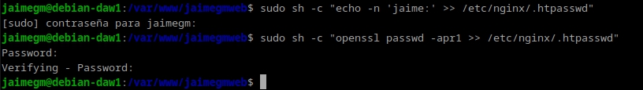
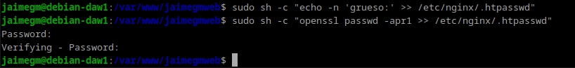
Las contraseñas deberán aparecer cifrads cuando se abra el archivo.
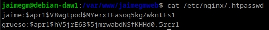
Configurando el Servidor Nginx para Usar Autenticación Básica
Se cambiará la configuración del server block sobre el cual queremos aplicar la restricción de acceso.
sudo nano /etc/nginx/sites-available/nombre_web
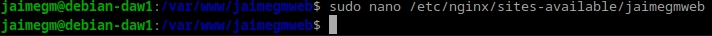
Nginx permite añadir restricciones a nivel de servidor o en un location. Se protegerá el documento raiz de la web.
Se utilizará auth_basic dentro del location y se pondrá un nombre a lo que se mostrará. Se configurará Nginx para que utilice el fichero previamente creado con auth_basic_user_file.
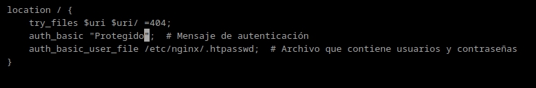
Se reiniciarán los servicios de Nginx para que se apliquen los cambios hechos hasta ahora.
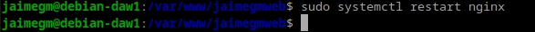
Probando la Nueva Configuración
Si se han seguido los pasos, se podrá visualizar una ventana requiriendo el usuario y la contraseña que se ha configurado previamente.
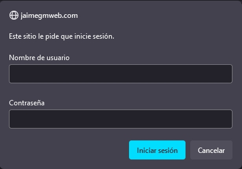
Si se decide cancelar la autenticación se mostrará una ventana con el siguiente error:
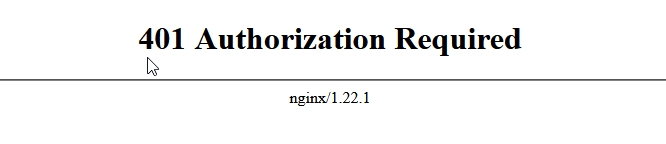
Una vez autenticados, la informacion se guardará en el navegador y no se volverá a requerir de los datos de autenticación.
Tareas
Se realizará una prueba que consiste en intentar entrar en la página web con un usuario erróneo y después con uno de verdad. Esto quedará registrado en los logs. Se va a intentar entrar con el usuario "manolo"
Aqui se puede ver que se ha intentado acceder con el usuario "manolo" y ha quedado registrado en el archivo access.log y error.log. Cuando se ha intentado entrar con un usuario registrado, no se aprecia ningún error.
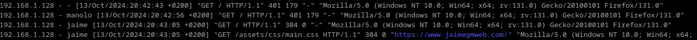
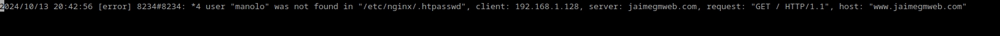
La siguiente tarea consiste en solo aplicar la restricción a una sola parte de la web. Se aplicará a la sección "Contact". Para ello se deberá modificar el archivo /etc/nginx/sites-available/nombre_web.
Debido a que la web no tiene ficheros divididos para cada sección es imposible proteger una única sección porque Nginx no puede aplicar la autenticación directamente a los fragmentos de URL que están después del símbolo #, como #contact. Estos fragmentos son procesados únicamente por el navegador y no son enviados al servidor. Por ello se ha decidido hacer un archivo HTML, pero solo con la parte Contact.
Para aplicar la proteción se ha de modificar el archivo de configuración.
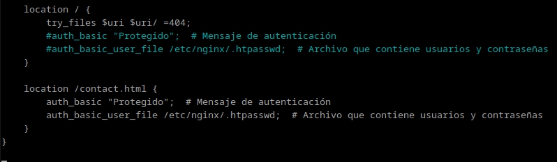
Y una vez hecho esto, la página web a la que se accede sigue siendo la misma, solo que ninguno de los botones a excepción de "Contacto" funcionan. Al entrar ahora en la web https://www.jaimegmweb.com/contact.html se solicitarán las credeciales necesarias.
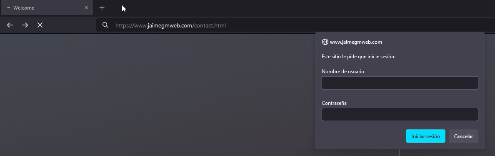
Combinación de la Autenticación Básica con la Restricción de Acceso por IP
La autenticación básica HTTP será combinada con la restricción de acceso por IP:
Un usuario es autenticado y tendrá una IP. Un usuario es autenticado o tendrá una IP.
Tareas
Se configurará Nginx para que la IP de la maquina física no tenga acceso a la raiz de la web. Para ello se modificará el archivo de configuracion.
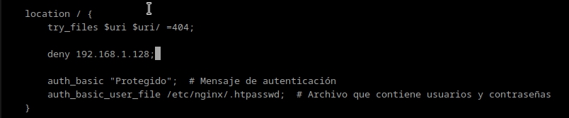
Al intentar acceder, el navegador nos mostrará la siguinte pantalla:
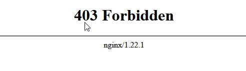
Y si se mira el archivo error.log, aparecerá el un error que indica que se ha prohibido el acceso.
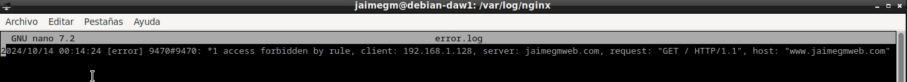
Ahora se hará lo contrario, se tendrá un ususario válido y una IP válida. Se modificará el archivo de configuración como previamente se ha hecho.
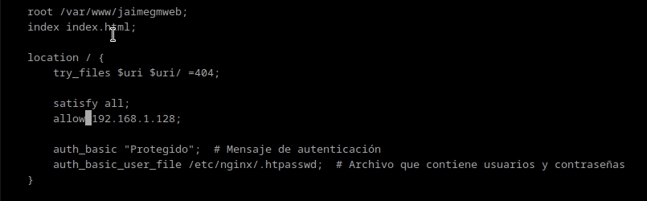
Al intentar entrar en la web, no se pone ningún tipo de impedimento.
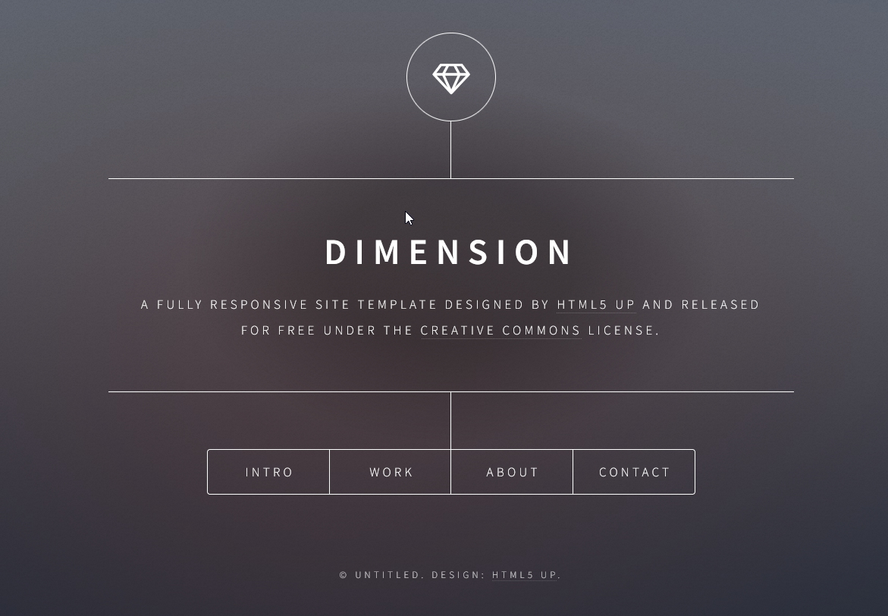
Cuestiones Finales
Cuestión 1
No se podrá acceder porque, aunque la IP está permitida, la directiva satisfy all; requiere cumplir tanto la validación de IP como la autenticación básica. Si se ingresa erroneamente el usuario o la contraseña, fallas en la autenticación, por lo que el acceso será denegado.
Cuestión 2
No se podrá acceder porque la regla deny all; bloquea todas las IPs antes de llegar a la excepción que permite la IP. Aunque se introduzca el usuario y la contraseña correctamente, la directiva deny all; se evalúa primero, bloqueando el acceso antes de verificar si la IP está permitida.
Cuestión 3
No se podrá acceder porque, aunque la directiva satisfy any permite el acceso si se cumple cualquiera de las condiciones la IP está bloqueada con la regla deny. Aunque se ingresee correctamente el usuario y la contraseña, la denegación de tu IP impide el acceso.
Cuestión 4
location /Proyectos {
try_files $uri $uri/ =404; # Devuelve un error 404
auth_basic "Acceso Restringido"; # Mensaje de autenticación
auth_basic_user_file /etc/nginx/.htpasswd;
}